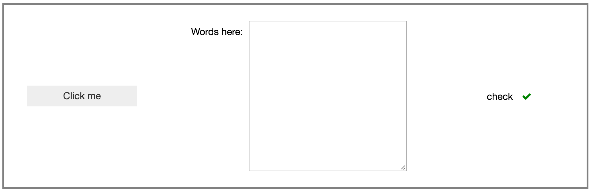
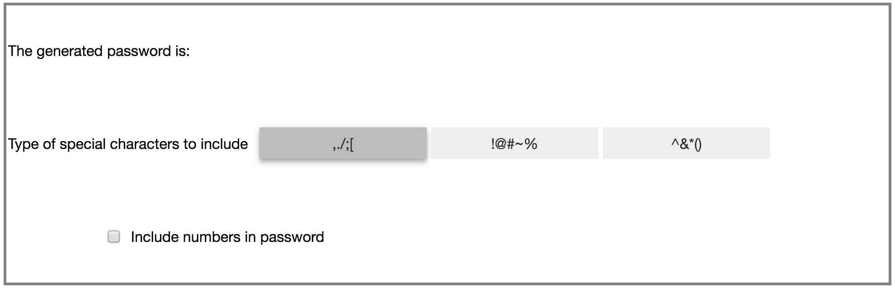
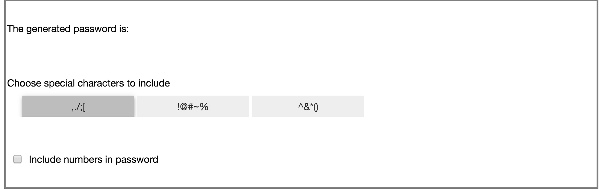

OPTIONAL widget layout exercises#
Earlier notebooks listed the container widgets in ipywidgets and how the widgets contained in them are laid out. As a reminder, the contents of the container are its children, a tuple of widgets. The distribution and alignment of the children are determined by the flex-box properties of the layout described in Widget Styling.
This set of exercises leads up to a password generator widget that will be completed after discussing widget events. The generator allows the user to set the length of the password, choose a set of special characters to include, and decide whether to include any digits.
Eventually the widget will look like this:

At the end of this notebook we will have laid out the controls shown below. We’ll come back to the generator in later notebooks after we have discussed widget events.

import ipywidgets as widgets
1. Alignment of children#
The cell below defines three children that are different sizes and lays them out in a horizontal box. Adjust the two layout properties in the code cell below so that the displayed hbox matches the image below.

You may need to look back at the styling notebook.
button = widgets.Button(description='Click me')
text = widgets.Textarea(description='Words here:', rows=10)
valid = widgets.Valid(description='check', value=True)
container = widgets.HBox()
container.children = [button, text, valid]
container.layout.width = '100%'
# The border is set here just to make it easier to see the position of
# the children with respect to the box.
container.layout.border = '2px solid grey'
container.layout.height = '250px'
# ↓↓↓↓↓↓↓ Adjust these properties ↓↓↓↓↓↓↓↓↓
container.layout.justify_content = 'flex-start'
container.layout.align_items = 'flex-start'
# ↑↑↑↑↑↑↑↑↑↑↑↑↑↑↑↑↑↑↑↑↑↑↑↑↑↑↑↑↑↑↑↑↑↑↑↑↑↑
container
2. Layout from scratch#
Three child widgets are defined in the cell below. Compose them into a vertical box laid out as shown in this image:

You should be able to accomplish that layout by setting the appropriate layout attribute(s) on vbox (don’t forget to add the children first).
A box is drawn around the container to make it easier to see where the children are placed
# %load solutions/password-ex2.py
numbers = widgets.Checkbox(description='Include numbers in password')
words = widgets.Label('The generated password is:')
toggles = widgets.ToggleButtons(description='Type of special characters to include',
options=[',./;[', '!@#~%', '^&*()'],
style={'description_width': 'initial'})
vbox = widgets.VBox()
# The border is set here just to make it easier to see the position of
# the children with respect to the box.
vbox.layout.border = '2px solid grey'
vbox.layout.height = '250px'
# ↓↓↓↓↓↓↓ Insert your layout settings here ↓↓↓↓↓↓↓
# Don't forget to add the children...
vbox
3. Improve the look of the children#
The “special character” toggle buttons would really look better if the label was above the buttons, and the checkbox would look better without the whitespace to its left.
i. A better special character control#
In the cell below, construct a widget with the text “Type of special characters to include” above the ToggleButtons, with all of the content left-aligned, and the toggle buttons slightly indented.
Use the margin property of the layout to indent.
It should look like this when you are done:
This is the second time we’ve needed a vbox with all the items left-aligned, so let’s start out with a Layout widget that defines that format
# %load solutions/password-ex3i.py
vbox_left_layout = widgets.Layout(align_items='flex-start')
label = widgets.Label('Choose special characters to include')
toggles = widgets.ToggleButtons(description='',
options=[',./;[', '!@#~%', '^&*()'],
style={'description_width': 'initial'})
# Set the margins to control the indentation.
# The order is top right bottom left
toggles.layout.margin = '0 0 0 20px'
better_toggles = widgets.VBox([label, toggles])
better_toggles.layout = vbox_left_layout
better_toggles
ii. Checkbox whitespace issues#
The checkbox in the example above has unnecessary whitespace to the left of the box. Setting the description_width to initial removes it, so do that below.
# %load solutions/password-ex3ii.py
numbers = widgets.Checkbox(description='Include numbers in password',
style={'description_width': 'initial'})
numbers
4 Put the pieces together#
Use your improved toggles and number checkbox to re-do the password generator interface from exercise 2, above.
When you are done it should look like this:

# %load solutions/password-ex4.py
Alignment of children: additional (optional) challenges#
Using only layout attributes make the widget above:
Display the children in reverse order (not by just reversing the list of children).
Display the children vertically instead of horzontally.